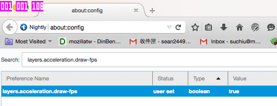

layers.acceleration.draw-fps preference.true. Now you will be able to see three little purple boxes at the upper left corner of the Firefox window. The first box represents FPS.
Animations are critical for a pleasurable user experience on many applications. There are many ways to implement web animations, such as CSS {{cssxref("transition","transitions")}}/{{cssxref("animation","animations")}} or JavaScript-based animations (using {{domxref("Window.requestAnimationFrame","requestAnimationFrame()")}}). In this article, we analyze the performance differences between CSS-based and JavaScript-based animation.
Both CSS transitions and animations can be used to write animation. They each have their own user scenarios:
In terms of performance, there is no difference between implementing an animation with CSS transitions or animations. Both of them are classified under the same CSS-based umbrella in this article.
The {{domxref("Window.requestAnimationFrame","requestAnimationFrame()")}} API provides an efficient way to make animations in JavaScript. The callback function of the method is called by the browser before the next repaint on each frame. Compared to {{domxref("WindowOrWorkerGlobalScope/setTimeout","setTimeout()")}}/{{domxref("WindowOrWorkerGlobalScope/setInterval","setInterval()")}}, which need a specific delay parameter, requestAnimationFrame() is much more efficient. Developers can create an animation by changing an element's style each time the loop is called (or updating the Canvas draw, or whatever.)
Note: Like CSS transitions and animations, requestAnimationFrame() pauses when the current tab is pushed into the background.
For more details read animating with JavaScript from setInterval to requestAnimationFrame.
The fact is that, in most cases, the performance of CSS-based animations is almost the same as JavaScripted animations — in Firefox at least. Some JavaScript-based animation libraries, like GSAP and Velocity.JS, even claim that they are able to achieve better performance than native CSS transitions/animations. This can occur because CSS transitions/animations are resampling element styles in the main UI thread before each repaint event happens, which is almost the same as resampling element styles via a requestAnimationFrame() callback, also triggered before the next repaint. If both animations are made in the main UI thread, there is no difference performance-wise.
In this section we'll walk you through a performance test, using Firefox, to see what animation method seems better overall.
Before going through the example, please enable FPS tools first to see the current frame rate:
layers.acceleration.draw-fps preference.true. Now you will be able to see three little purple boxes at the upper left corner of the Firefox window. The first box represents FPS.Initially in the test seen below, a total of 1000 {{htmlelement("div")}} elements are transformed by CSS animation.
{{JSFiddleEmbed("https://jsfiddle.net/zt94oew2/1/","","480")}}
The animation can be switched to requestAnimationFrame() by clicking the toggle button.
Try running them both now, comparing the FPS for each (the first purple box.) You should see that the performance of CSS animations and requestAnimationFrame() are very close.
Even given the test results above, we'd argue that CSS animations are the better choice. But how? The key is that as long as the properties we want to animate do not trigger reflow/repaint (read CSS triggers for more information), we can move those sampling operations out of the main thread. The most common property is the CSS transform. If an element is promoted as a layer, animating transform properties can be done in the GPU, meaning better performance/efficiency, especially on mobile. Find out more details in OffMainThreadCompositing.
To enable the OMTA (Off Main Thread Animation) in Firefox, you can go to about:config and search for the layers.offmainthreadcomposition.async-animations. Toggle its value to true.

After enabling OMTA, try running the above test again. You should see that the FPS of the CSS animations will now be significantly higher.
Note: In Nightly/Developer Edition, you should see that OMTA is enabled by default, so you might have to do the tests the other way around (test with it enabled first, then disable to test without OMTA.)
Browsers are able to optimize rendering flows. In summary, we should always try to create our animations using CSS transitions/animations where possible. If your animations are really complex, you may have to rely on JavaScript-based animations instead.